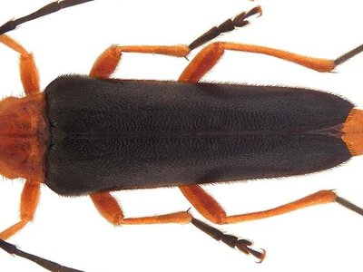

昆虫观察极简工具包
认真研究昆虫并不需要昂贵的设备。一部智能手机、一个简易手持放大镜，再加上几件自制工具，就足以让你在美国的后院、校园和自然保护区记录物种、观察行为并探索生命周期的奥秘。

手持放大镜、罐子与网兜
手持放大镜、罐子与捕虫网
10倍手持放大镜能清晰展现翅膀脉络、口器细节乃至甲虫身上微小的螨类。透明塑料罐预先打好气孔，便于短暂轻柔地困住昆虫以便近距离观察。轻便的捕虫网适合在草甸或池塘边缘采集飞行昆虫，但切记避免在小范围内过度采集。
用胶带标记罐子，注明日期、地点和栖息地类型；这些信息在您日后将观察记录上传至公民科学平台时将极具价值。
智能手机摄影技巧
现代手机摄像头是记录昆虫的强大工具。拍摄时应尽量利用自然光，从侧面缓慢靠近而非正上方直对。点击屏幕将焦点对准昆虫头部或胸部，并从不同角度拍摄多张照片：包括俯视图、侧视图，以及触角或翅脉等关键特征的特写。
一个简单的夹式微距镜头能显著提升拍摄蚂蚁或小黄蜂等微小物种的细节表现。
田野笔记
每次外出前，选定一个观察主题——可以是某类植物上的传粉昆虫、门廊灯周围的飞虫，或是落叶层中的分解者。限定观察范围能促使你进行更深入的观察，相比试图一次性记录所有事物，这样往往能获得更出色的摄影记录。
简单的工具降低了昆虫研究的入门门槛，使得邀请朋友、学生或家人参与变得轻而易举。您的照片和笔记不仅能支持本地生物多样性调查，还能为辅助识别的应用程序提供训练数据。